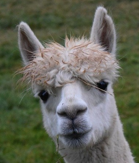

Opleidingsonderdeel
jaar 1

Voor leuke weetjes over lama's klik hier
Heeft u zich ooit afgevraagd hoe men een lama moet wassen?
Het antwoord vindt u hier
Dit is de enige link die niet over lama's gaat.
Volgend stukje gaat enkel over design en elementen, niet over lama's.
Dit is een kop op niveau 1
Dit is een kop op niveau 2
Dit is een kop op niveau 3
Dit is een kop op niveau 4
Dit is een kop op niveau 5
Dit is een kop op niveau 6
Dit is een paragraaf
"Dit is een citaat."
Deze paragraaf gaan we over
twee lijnen verdelen met een line break.
In deze paragraaf gebruiken we een superscript en een subscript.
In deze paragraaf lichten we iets uit en zorgen we voor een andere stemming.